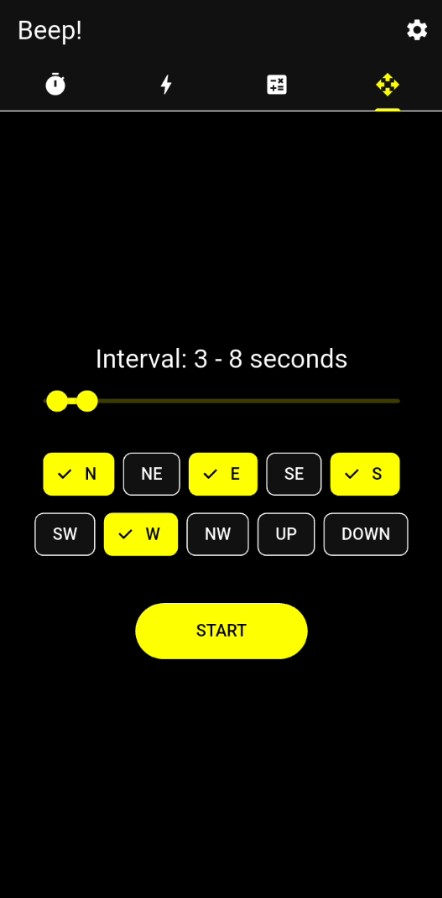
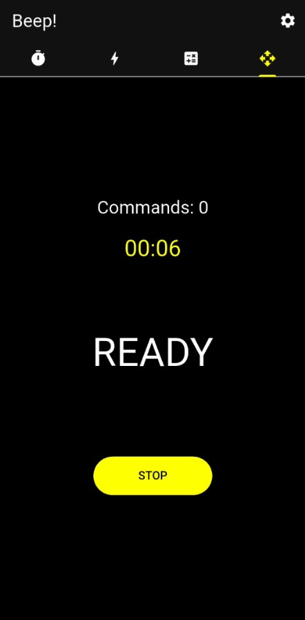
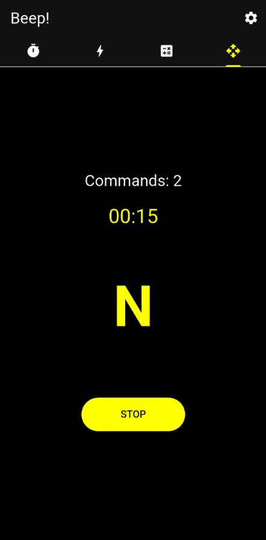
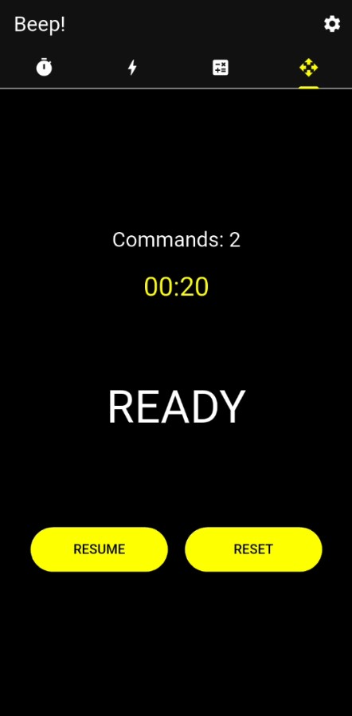

تمرینات چابکی و جهتیابی 🧭
سیستم فرماندهی رندوم جهتها برای ارتقای چابکی، هماهنگی عصب و عضله و سرعت پاسخدهی حرکتی؛ ذهن و جسمت رو برای تغییر جهتهای انفجاری آماده کن!

تنظیم بازه زمانی و انتخاب جهتهای فعال (Commands Filter)
در این بخش تو فرمانده میدان هستی. ابتدا با اسلایدر نئونی، بازه زمانی فرکانس دستورات (مثلاً ۳ تا ۸ ثانیه) رو مشخص میکنی. سپس از بین ۱۰ جهت و موقعیت مختلف شامل جهات اصلی، فرعی و موقعیتهای بالاوپایین (N, NE, E, SE, S, SW, W, NW, UP, DOWN)، هر کدوم رو که برای تمرینت نیاز داری فعال یا غیرفعال میکنی تا الگوریتم فقط از بین اونها انتخاب کنه.

شروع چالش و وضعیت آمادهباش (READY)
به محض لمس دکمه START، تیکتاک برعکس تایمر شروع میشه. عبارت READY روی صفحه نقش میبنده تا بهت هشدار بده که باید در مرکز میدان تمرینت بایستی و تمرکز کنی. شمارنده دستورات (Commands) روی عدد صفر قرار داره و موتور زمانبندی در حال محاسبه یک تاخیر تصادفی برای شلیک اولین فرمان حرکتیه.

انفجار دستورات ناگهانی؛ جهت رو شکار کن!
بوق صدا در فضا میپیچد و همزمان حرف اختصاری جهت انتخابشده (مثلاً N برای شمال) با رنگ شاخص تم نئونی روی صفحه منفجر میشه! بسته به تم انتخابی شما (تاریک یا روشن)، این فرمان بصری با بالاترین کنتراست ممکن به چشمهات شلیک میشه. با دیدن و شنیدن این دستور، باید بلافاصله پای جابهجایی یا حرکت انفجاری به اون سمت رو بزنی.

مدیریت چرخه تمرین (Resume / Reset)
نیاز به یک استراحت کوتاه داری یا میخواهی موقعیت مخروطهای تمرینت رو اصلاح کنی؟ دکمه STOP رو لمس کن تا کل چرخه زمانبندی فریز بشه. بعد از آمادهشدن مجدد، با فشردن کلید RESUME تمرینت رو دقیقاً از همان ثانیه و تعداد دستورات قبلی ادامه بده، یا با زدن RESET همهچیز رو برای یک سناریوی جدید صفر کن.